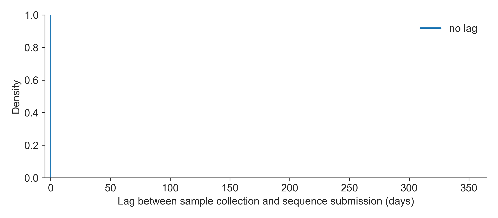
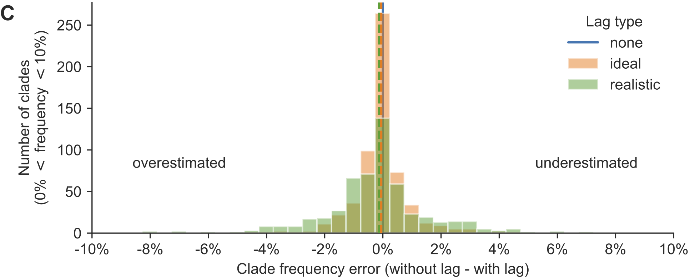
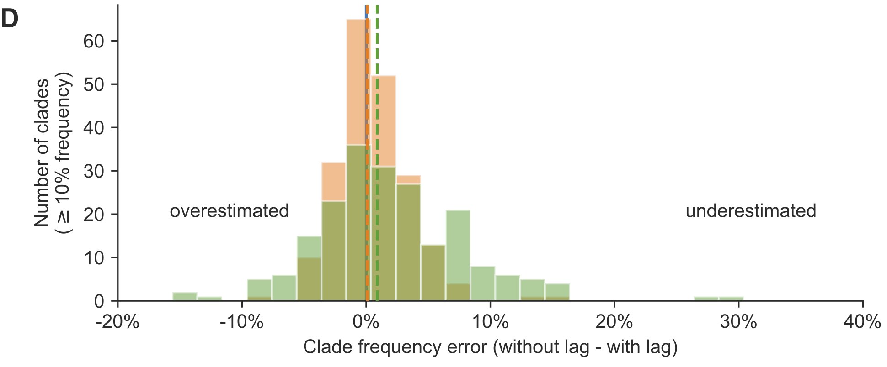
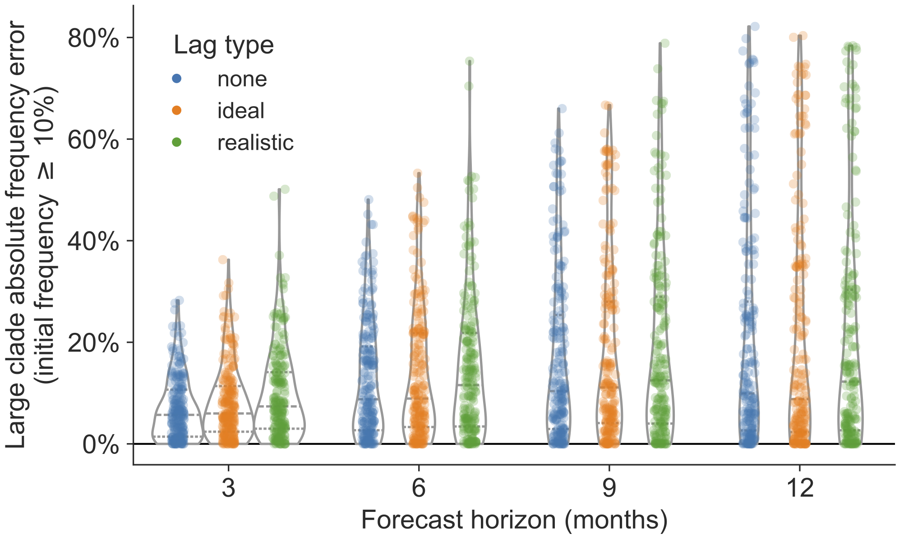
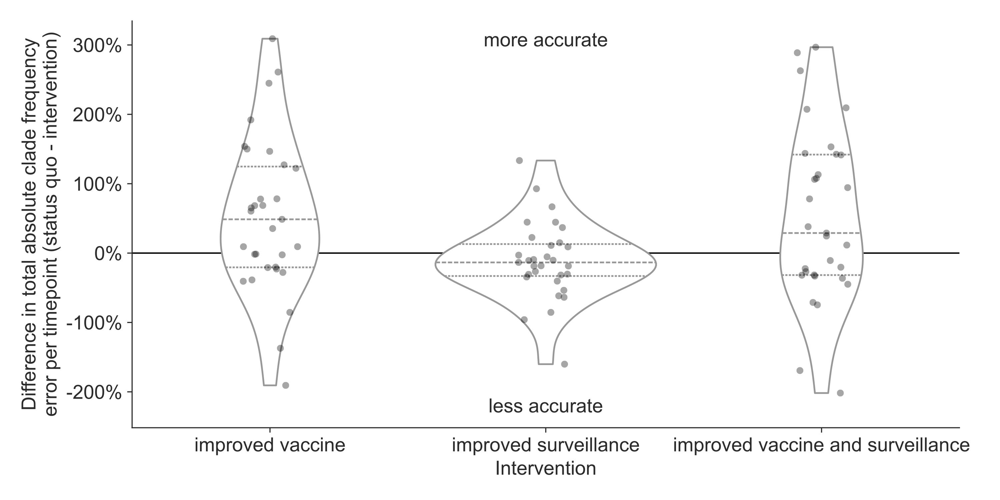

Timely vaccine strain selection and genomic surveillance improves evolutionary forecast accuracy of seasonal influenza A/H3N2
John Huddleston, PhD
Bedford Lab
Fred Hutchinson Cancer Center
September 30, 2024
Seasonal influenza vaccines remain the best protection against hospitalization and death

Photo: WHO / Tom Pietrasik
New vaccines take approximately 9 months to make and distribute

After Trevor Bedford and Morris et al. 2018
The Global Influenza Surveillance and Response System tracks influenza year-round

{kind=link}
In the past, we have trained models ignoring lags in sequence availability

In practice, sequence availability lags by ~3 months on average

What if we could reduce forecast horizons to less than 12 months?

Reducing lags decreases distances between predicted and observed future populations

Reducing submission lags improves estimates of current clade frequencies

Reducing submission lags improves estimates of current clade frequencies

Reducing submission lags improves estimates of current clade frequencies

Reducing forecast horizons increases accuracy and precision of clade frequency forecasts

Faster vaccine selection is the most effective realistic intervention

Faster vaccine and surveillance perform best with a perfect forecast

Conclusions
- faster vaccine development improves our predictions of the future
- faster genomic surveillance improves our understanding of the present
Pandemic-era submission lag shows signs of improvement

Thank you!
|
Fred Hutch Cancer Center
Data Sources
|
Funding
|
Continue the conversation
By email at jhuddles@fredhutch.org